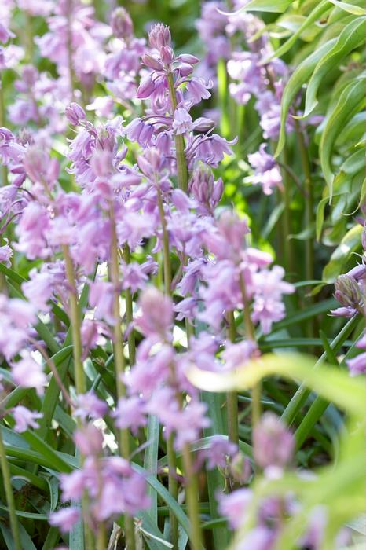

Talking About Flowers
This Will Be About Bluebell Flowers and What They Could Mean
Bluebells are bell-shaped herbs

Although blue is the most common color for bluebells, there are many more that are white or pink.
In the language of flowers, the bluebell flower meaning can be humility, constancy, gratitude, and everlasting love. The meaning of the bluebell flower can change depending on geographical regions, spiritual beliefs, and more.
,